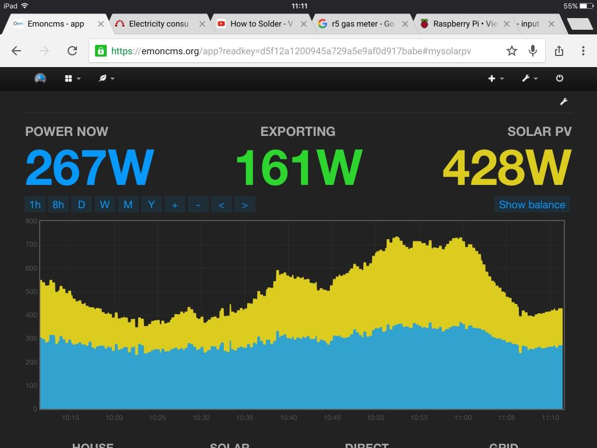

Hi,
I've set up a system to monitor current using the CT clamp and mains voltage using the instructions from the breadboard layout. My solar PV feed is read from another rPi connected to the inverter using RS485. Everything seems to be working OK, however I have noticed in EmonCMS that when the solar generation kicks in the power usage graph seems to increase and decrease with the solar generation. As you can see from the screenshot below from about 9.15 where the PV exceeds the consumption the consumption follows the PV generation
I'm using a cheap arduino nano clone from e-bay, could it be a problem with arduino, would it be worth replacing with a genuine arduino ?
Power usage is calculated by by adding the solar generation figure to the value for real power
Any help appreciated

Re: Potential Noise from CT
Where are you measuring the current in relation to the point where the PV infeed is?
If you are measuring on the house side, then "Power usage is calculated by by adding the solar generation figure to the value for real power" will give you the result that you are seeing. If you are measuring on the grid side, then adding the generation figure to the nett grid power should give you the house consumption.
Re: Potential Noise from CT
Yes I am measuring on the grid side where do I get the value for nett grid power ?
Re: Potential Noise from CT
If you are measuring on the grid side of the PV infeed, then you are measuring nett grid power. If you display that on its own - before adding in the PV feed from your inverter, you should see it fall as generation increases, and it will go negative when generation exceeds consumption. I just wondered whether you were actually measuring where you thought you were measuring.
If you're on a very weak supply, it's conceivable that the house consumption would tend to follow the pv generation, because the system voltage would tend to rise as generation increased. But generally in the UK, the system fault level is around 300 kVA, and you're generating in round figures 1% of that on a good day, so it won't account for a rise of more than a few volts, but more if all the neighbours join in!
I think what you need to do to take this further is to make a series of measurements at times when the PV generation is variable but the house load is a known constant value (i.e. you turn off all appliances that control themselves and run a known fixed load while you record the numbers) so that you have some accurate data.
Re: Potential Noise from CT
Thanks again for the response, this morning I turned off everything that could vary the load, so we had a constant load, and the results are attached below. You can definitely see the consumption following the PV. Could there be an issue with the CT clamp as it is on the live cable between the meter and the main isolation switch, but the neutral cable is also touching the CT ?
Many thanks for your help, it would be great to get this working properly
Re: Potential Noise from CT
Hi I just wondered if anyone had any idea on why this issue is happening, It's just crossed my mind that if this is what the CT clamp is picking up, is my electricity meter also picking up similar and am I likely to be being charged for electricity I'm not using ?
I've ordered a pulse counter to keep track of the electricity meter, not sure if this will tell me anything though
thanks
Stuart
Re: Potential Noise from CT
Sorry, somehow I'd missed your post from 24th March.
The current in the line and neutral must be equal and opposite (else you have an earth fault somewhere that needs sorting out). So although that might affect the calibration slightly (see the CT report for some numbers), it cannot do what you are seeing.
I suggest you delete the PV input from emonCMS and see if the effect is still there. If it comes good, it's in the maths in the input processing. I can't really believe that it's a problem with measuring the current, nor can it be changes in the line voltage that give a 33% rise in power - that implies that exporting an extra 200 W or so gives a 15% rise in the system voltage, and that I don't believe. If the voltage is changing that much, the lights would go out if you switched a kettle on.
If you want to rule out voltage pickup by the CT, put the CT on the neutral instead (but facing the other way of course).
Re: Potential Noise from CT
Hi Robert, I've had a play with some of the things you suggested
I set up a new input for the Solar (solar2) and have graphed the following
As you can see from the attached graphic, the consumption is still following the solar input.
Could the issue be to do with calibration ?, when I calibrated the system I used a 3kw kettle, however on my energy monitor it was only showing up as around 2Kw, I also note when our electric shower is being used it's showing up as around 7Kw when it is a 9.5kw shower. For example if the solar generation increased by 1000w and the load stayed the same the CT reading should also change by 1000w. However if the CT is not calibrated correctly it may only be showing a change of say 800w which would make the consumption figure look like it is increasing ? I will try and borrow a more accurate meter to recalibrate and see what happens.
Re: Potential Noise from CT
Please load that graph and the other illustrations here. We don't like people using 3rd party sites because the data can become lost or deleted, and that completely devalues the thread should someone come back to this after that has happened.
If you haven't calibrated your CT input (and when can I get it through to everyone that a current transformer is not a clamp?), then if you're taking the difference between the solar infeed and a proportion of the solar infeeed and in effect adding that to the house consumption. So you are likely to see the effect that you are describing.
I don't think that you will get accurate results until you properly calibrate your shield.
Re: Potential Noise from CT
Graphics have now been uploaded to site.
I have recalibrated tonight with an accurate meter, the previous power monitor I had bought from Toolstation is very inaccurate so be warned !
Hopefully when the solar generation starts in the morning the issue should be solved